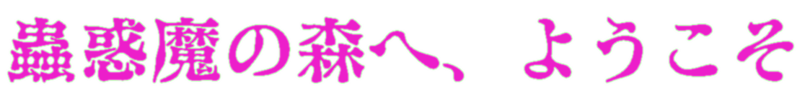

蟲惑魔とは？
遊戯王の罠カードに関連するテーマの一つで、主に食虫植物と昆虫をモチーフとしたモンスターで構成されている。
モンスター効果は、「○○ホール」、「○○の落とし穴」通常罠に関連する効果でほぼ統一されている。
また、イラストの少女たちは疑似餌であり、本体の昆虫や植物は基本的に少女の背後や足元にいる。

遊戯王の罠カードに関連するテーマの一つで、主に食虫植物と昆虫をモチーフとしたモンスターで構成されている。
モンスター効果は、「○○ホール」、「○○の落とし穴」通常罠に関連する効果でほぼ統一されている。
また、イラストの少女たちは疑似餌であり、本体の昆虫や植物は基本的に少女の背後や足元にいる。